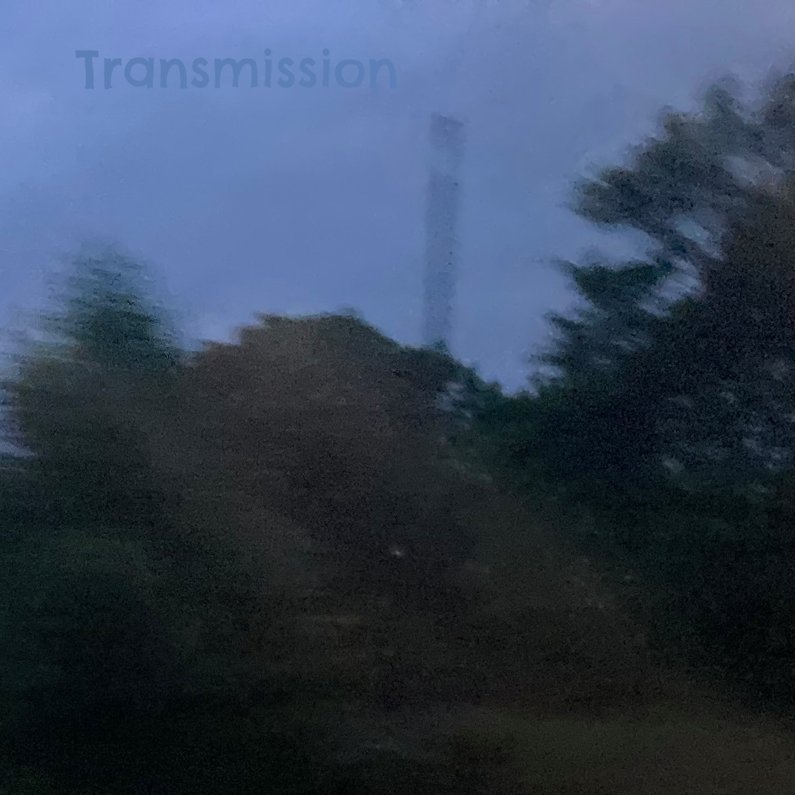

Burning the Daylight Oil
Burning the Daylight Oil is my first album, released on 16 August 2024. The album is a dramatic shift in my style of production and writing, with much more complete, longer and more ambient sounds included. It is also the longest studio album I had ever released at the time, and is the first album to have outtakes and to be designed to fit onto a CD, as opposed to not worrying about limits on my previous two efforts. Because of this, as well as the time dedicated to its production, I feel that this my first "real" album.
The album as a whole took a year-and-a-half to record, by far the longest recording time for an Engine Two album. The album was worked on on and off throughout that period, with slumps and instances of writer's block throughout. I started working on the album because I was fed up of making sub-par music, and wanted to prove to myself that I could actually make something good. The point of the project itself was basically to keep writing songs until I wrote a song I genuinely liked (the constant scrapping and trying again creating the album's title), and when that eventually did happen, I decided I could turn the project into an album, and kept writing until I had enough good songs. I think that this was the correct decision, as by that point the album was filled with goodies, and the lesser tracks had either been cut or used as B-sides instead, while if I had decided to release the album earlier, it would have been a lot worse.
Background
My second DJB album, Twinned, was released in June 2022, and it was a bit rubbish. I think that it is by far my worst album, and there is maybe one good song on it. I knew this at the time, and so the album was never officially released, unlike the first DJB album, Staring Into the Sun. Neither are on this website because I've retired the DJB name and left the songs I made under it behind (more info on the Defibrillated Collection page).
Following this disappointment, I slowed my music production for a while, mainly due to demotivation. A further album, to be titled Troubles in Transit, was attempted, but never came to fruition, with only three tracks being recorded. Only two singles from it, "Final Sunset" and "Overtaker" were released. Following this, I focused solely on Burning the Daylight Oil and my EP And the Pandemonium Continued.
Recording and production
In late 2022, I decided to sit down, work for a good while on a track, and release a single I'm actually proud of and can put on the shelf next to the music I listen to. However, when the first song of these sessions was completed in January 2023, I was disappointed with it, and decided to try again. My second work, which took some planning, was inspired by the works of Trouser Enthusiasts and Bedrock, but ended up sounding like a Sasha set opener. While I originally didn't have a name for the song, I decided in May to call it "For What You Can Muster", after "For What You Dream Of..." by Bedrock, which was the foundation of the track. Despite this, I was still unhappy with it, as I felt it was missing something, and kept working on new ideas.
By this point, I had decided on releasing the tracks I had produced in the sessions, and was yet to produce, as an EP. However, I felt the songs following "For What You Can Muster" were just getting worse and worse as time went on, and decided in June 2023 to attempt the "For What You Can Muster" idea again, but try and find what it was missing. My first attempt at this was "For What You Can Attempt", which was named so as a continuation of the theme. However, I was even more disappointed with this track than I was with the first, and felt I was missing even more than before. Another attempt was tried but quickly abandoned before it could be finished. Following this, with ideas running low on chord progressions and new directions to take the track in, I decided to re-use the chord progression from "Overtaker", which I knew worked from the track in question, to try and find what wasn't right in my attempts. However, while working on it, I realised exactly what the song was missing, that being a melody. Now, it's worth pointing out that I'm rubbish at writing melodies, and so my songs often omit them, instead just trying to do more with synthesizers and chords. Despite this, I managed to write a melody for the track, which after some re-writes I felt was suitable. After constructing the first breakdown and beat-drop with the melody, I was overjoyed, because I knew I had found it - the song I had been wanting to make throughout this project. Within a few days the song was completed, titled "For What You Can Create", and I declared I had found the song I was looking for.
Despite this, I decided to keep working on the priject beacuse the current music set to go on the now-Mini-Album wasn't nearly as good as "For What You Can Create". Production then continued for another year, with the majority of the album's tracks being produced in this time. At some point during this process, I decided that the album would be a full-length LP. As more and more tracks were recorded, I had to begin cutting tracks from the album in order for it to fit onto a single CD, a first for me. As more and more material was being cut, I considered making the album a double album, with two CDs, but decided the quality and short duration of the cut tracks made it pointless, and that they should be instead used as B-sides or even not released entirely. The album's track order was changed throughout this process, with tracks being moved even days before the release of the album. My constant usage of the "Overtaker" chord progression in many tracks on the album led to "The Overtaken Suite", consisting of all of the songs which use the progression, being placed at the end of the album in early versions. The idea was inspired by "The Narcotic Suite" from Music for the Jilted Generation by The Prodigy. When one of the tracks in the suite was cut and used as a B-side, I decided to dissolve it and separate the remaining three tracks on the album's tracklist.
The last song recorded for the album, "Grit When Necessary", was completed in early May 2024. At this point, I decided to finish the project there, even with other ideas for further songs, which I decided I would attempt in future. I felt I'd done enough, and I just wanted to make sure the tracklist was right, clean up any issues, and get the album out. If I had let myself add some more songs to it, I would just keep adding more and more music as I came up with more and more ideas. Production was completed a few days before release, although by this point it was mainly just clearing up errors in the tracks and changing the mix slightly.
Artwork
The front cover depicts the Moon visible through the branches of a tree. The tree was outside of my house, and one evening in September 2023 I noticed from my desk that the Moon was perfectly placed in a break in the leaves. I got up from my desk and took the photo which would be later used as the album cover.
Release
The release of the album was teased on my YouTube channel Tedster through a video titled "morning", released on 16 July 2024, one month before the album's release, which featured a stopwatch ticking up from 0 to 39, although the numbers 5, 14 and 31 would remain on screen after they had been counted. These symbolised numbers related to the project, mostly in terms of how many days until a certain release related to the album would come out. 5 was present because the release of "For What You Can Create" was five days away, 14 was present because that's how many songs there are on the album, 31 was present because the album was to be released 31 days from then, and 39 was present because the "Transmission" single would be released 39 days from the release of the video.
The album was released on 16 August 2024. The release date was set as then because when the date is written in the American date format (MM/DD/YY), it appears as 08/16/24, which is the first three numbers in the eight times table. This fact was hinted at in the description of "morning", which read "multiplication dates / american table". When the words of each phrase a swapped with one another, it reads "multiplication table / american dates". "For What You Can Create" was released in a similar fashion, on the 21 July 2024, which would read as 07/21/24 in the American date format, and while 24 is not divisible by seven, seven is a factor of 21.
Singles
There were two singles released from the album, "For What You Can Create" and "Transmission", released on 21 July 2024 and 24 August 2024, respectively. "Cycles", "Up and Out" and "Hand You Over" were all considered for a single release as the third single (with the latter two being considered as a double-A side), but I decided against it simply because there was no new content to include in the singles.
Each single featured two B-sides each, "For What You Create" having "For What You Can Attempt" and "Checked Boxes" as B-sides, and "Transmission" having "Syncopated" and "They've Found You" as B-sides. The "Transmission" single also featured an extended version of the track. A shortened version of "For What You Can Create" was attempted to make the track more accessible, but I was only able to cut the track down to six minutes, which is roughly half its original length, but still beyond the standard 3/4 minutes of a radio edit.
Aside from these B-sides, two other tracks, "A Busy Interval" and "Understeer", were produced in the sessions but not released.
Songs
"Intro"
The intro for the album was ironically produced late in the album's recording history, and was completed in a few hours. However, it also features audio I recorded while on holiday in Ibiza in summer 2023, midway through the project. I wanted to make an intro that sounded like "Early", the opening track of Chicane's Far From the Maddening Crowds. I did this by playing a constant bass note at the opening of the track before opening into a bunch of synth-pads.
"For What You Can Muster"
"For What You Can Muster" was the second track ever recorded for the album, being done in early 2023, and the first in the "For What You Can..." series. It was inspired by the works of Trouser Enthusiasts, particularly their remix of Tomski's "14 Hours to Save the Earth", and Bedrock's "For What You Dream Of...", which gave the track its name. The "Overtaker" chord progression is used in the track, although on a more minor level than other tracks on the album. After its production, I considered it the best song of the project so far, although not good enough for my standards of what I wanted. Its role as the lead single, which it had gained by default after production, was overthrown when "For What You Can Create" was produced.
The name "For What You Can Muster" was decided upon in May of the same year during a sleepless night in an attempt to distract myself so I could sleep.
"Drifting into Noise"
"Drifing Into Noise" was the first track recorded for the album, and one of the only ones which was properly planned prior to its creation. I had a full sketch of how I wanted the song to sound, with the intention being to make the song I wanted right out of the gates, which unfortunately did not happen. The lead melody was inspired by "Drifting Away" by Faithless, in particular the Paradiso Remix, while the introduction of the drums was inspired by "So Good" by Juliet Roberts.
"A Quiet Interval"
The first interlude of the album, "A Quiet Interval" was also recorded early into the production process, in a period plagued by poor productions and writer's block. Despite this, it was never cut from the album as it was probably the best song that came out of that period. The drum pattern used is a re-creation of the one in "Funky Drummer" by James Brown, and while I at first wanted to sample the original recording, I decided to recreate it instead when I found a direct sample didn't work that well.
"A Quiet Interval" has an unreleased "sister song", called "A Busy Interval". It utilises the same structure and chord progression, although played on different instruments. I decided to cut it from the album as it was an inferior version of the original. The track has never been released.
"Transmission"
"Transmission" is quite possibly the most important track on the album, as it taught me the important technique to just keep adding more to a song's texture until it's full, rather than leaving Kraftwerk-esque empty gaps. The song first came about not long after the recording of "For What You Can Create" and also utilised the "Overtaker" chord progression, although it was abandoned as I struggled to write a melody for it. Much later on in the recording process, I revisited the track after looking through old unfinished files I had. Feeling the opening I had written was worth releasing, I decided to write the melody to continue it. After writing this melody, and finding it fit very well, I attempted to find the correct instrument for it. I had one in mind, but misspelt it in the search box in the software, causing results I didn't want to appear, although one of the names caught my eye, which I then tried on the melody. The synth was supposed to be an arpeggiated riser, which would slowly increase the pitch of the note played, however I found that if I played a note with a short duration on it, which the entire melody was made up of, the pitch of the note would not change. The synth worked well, and so I used it.
As work on it continued, I also discovered a synth that using basic settings could have the sound of it varied dramatically. I decided to use this in the B-section of the track, with the switching between these sounds occuring at a faster and faster rate. I also began to experiment with panning effects in this track much more than I had previous, in order to create an even wilder effect than what the track was already giving.
After the song's production, I was happy than the track, more than usual, and decided after some thought to release it as a single. I showed a friend of mine the track, who was happy with it also, but advised me to "add more". I took this advice and added more synth pads, more melodics, more drums, and (at the request of the same friend) even a key change. This second version, which was later titled the "That's What I Want Mix" after "Money (That's What I Want)" by Barrett Strong, was not put on the album, as I felt it wasn't my original vision for the track. Instead, the original first version of the track would appear on the album. Despite this, I agreed that the remix was much better than the original, and decided to use it instead as the second single, to be released after the album, as that way it would still offer new content from an already-released album. It also makes it the only track on the album to receive a proper remix.
The track was heavily inspired by "Carte Blanche" by Veracocha. While the track did break from its roots in terms of melodics, the structure is almost identical.
"Up and Out"
The main melody for "Up and Out" was written through hitting record and letting my hands mess around on the keyboard until they had something. It is one of my favourite melodies of the album, both because of the synth it's played on and the melody itself. The name "Up and Out" stems from the fact that a friend of mine said that the track sounded like something from Flood Escape, a Roblox game from 2010 which involves progressing through a series of obstacles to climb to the top of a facility and escape a rising flood.
"909 Tango"
"909 Tango" was the third song produced for the album, and was almost not included on it. When I finished producing it, I immediately didn't like it, and so when it came to cutting tracks from the album, I chose it to be removed. It was only much later, when doing more work to the tracklist, that I recognised that the song wasn't that bad, and decided to place it back onto the album.
The song is named after the Samba influences on the track, namely the usage of many Brazilian forms of percussion, alongside the usage of a Roland TR-909 drum machine, which was used for the majority of the album's production.
"A Light Interval"
The penultimate track produced for the album, "A Light Interval" was originally just the opening chords and nothing more, left as an unfinished file for some time. It was only when I returned to my older projects in an attempt to make something new out of old ideas. The usage of the Mellotron on the track was inspired by "Strawberry Fields Forever" by The Beatles, which I had been experimenting with beforehand out of boredom.
This track also was considered as a B-side, but later added to the album. Its position on the album was changed last-minute from between "Bouncing Around" and "Cycles" to between "909 Tango" and "Bouncing Around".
"Bouncing Around"
This track is one of the last tracks produced for the album, and also one of my favourites, mainly for its experimental elements. The entire track was produced using only two instruments: a Roland TR-707 drum machine and a square wave preset. The track utilises panning effects throughout, particularly the middle section. The middle section works by playing the main chord progression of the song at a rate of one note per bar (or a semibreve), and slowly panning from the centre to the left over the course of four bars, then over to the right, back to the left and so on. A second track of the same instrument is introduced in the right ear, playing the chord progression at a rate twice as fast (two notes per bar, or minims), and panning twice as fast. Then another track twice as fast as the previous in both areas starts, then another twice as fast as that. The varying speeds of notes and panning creates an effect that I think sounds similar to the infamous "Fearful Harmony" error on the original PlayStation, which occurs after a user inserts an incompatible disc into the console, but a modchip within it forces the console to attempt to run it, leading to the PlayStation constantly failing to run it, which through a bug in the console's hardware causes the "chime" sound saved in the BIOS to begin playing on a loop in multiple instances at various speeds. I have an original PlayStation, but unfortunately it's a later model that doesn't have the "Fearful Harmony" error, otherwise I would have done it by now.
"Cycles"
The most trance-sounding track on the album, "Cycles" utilises the supersaw sound popularised by the Roland JP-8000, which became the sound of trance in 1999. It takes particular inspiration from "Ignition, Sequence, Start!" by System F, from his album Together, as well as "The Theme" by Jurgen Vries. It also utilises the "Overtaker" chord progression. In order to make the track as loud as possible, certain measures, such as using three separate snare drum sounds simultaneously, had to be taken. The song was considered for a single release, but due to a lack of additional content to include, was not released as one.
"Breaching the Vault"
Throughout the sessions, I would mess around with drum presets to cope with writer's block and to deal with boredom. As a drummer, I would often end up playing quite difficult rhythms that I had learnt from drumming over the years, and I liked the sound of these bored solos enough to create a song featuring them. "Breaching the Vault" was created as a mock film theme to the moment when the spy or the villain infiltrates the base of the other. After writing the drum part, I added some bass and additional percussion that felt "Bond-esque", and synths to accompany the rise in tension at the end of the track. Not knowing how to finish it, the track ends with no release in tension, before the heaviest track of the album begins.
"Grit When Necessary"
As the sessions drew to a close and the idea of making something of the same standard as late 90s trance came into sight, I had one last idea for a track, that being a standard, Lange-style, trance track. Work on the track began immediately, but the track accidentally fell in the wrong direction entirely, the bass and sounds on top of it sounding like a hard trance track. Accepting that this was now the fate of this song, I kept working on it under the file name "unable", after "Caned and Unable" by Hi-Gate, a trance track of a similar style to what the track was starting to sound like. Once the track was completed, I decided to save the original idea I had for another album, feeling this one was complete.
The track features an extra melody after some seconds of silence, similar to a hidden track. This portion of the song was improvised mid-way through the track's production, and preserved at the end of the file as production continued. It was only when it came time to export the file did I notice the recording, sat at the end of the song after a few seconds of silence, and I decided to keep it there. As I was checking through the album and this song in particular, I had doubts as to whether or not I should keep the section in the track, but ultimately decided to keep it.
"Hand You Over"
"Hand You Over" features structure identical to "Up and Out", and similar to other songs on the album. The title comes from the fact that it was during its production that I began using Roland TR-808 handclaps to help create tension in a breakdown. The second breakdown is also extended for this reason, as I felt that the bass and clap combination was so good it should be played for longer.
"For What You Can Create"
The lead single "For What You Can Create" is unusually placed as the final track on the album. This is because it's the final hurrah of the album; the track I had been searching for all that time. "For What You Can Create" is the third and final track in the "For What You Can..." series, with the first track in the series being featured at the start of the album, and the second being a B-side of "For What You Can Create". The song was the first I had ever produced which reached over ten minutes, something which was not planned but instead just happened as the song kept developing. The track is notable for its long breakdowns, filled with synth pads, which make up the majority of the track.
.jpg)
Released: 16 August 2024
Recorded: 2022–2024
Length: 78:33
- "Intro" – 4:02
- "For What You Can Muster" – 6:32
- "Drifting Into Noise" – 4:01
- "A Quiet Interval" – 4:33
- "Transmission" – 3:52
- "Up and Out" – 6:36
- "909 Tango" – 5:51
- "A Light Interval" – 3:18
- "Bouncing Around" – 5:41
- "Cycles" – 6:17
- "Breaching the Vault" – 2:28
- "Grit When Necessary" – 7:09
- "Hand You Over" – 6:45
- "For What You Can Create" – 11:28
"For What You Can Create"

Released: 21 July 2024
Recorded: June 2023
Recorded: June 2023 ("...Attempt")
Recorded: February 2024 ("Checked Boxes")
Length: 11:28
- "For What You Can Create" – 11:28
- "For What You Can Attempt" – 8:15
- "Checked Boxes" – 5:10
"Transmission"

Released: 24 August 2024
Recorded: Sept 2023, February–March 2024
Recorded: October 2023 ("Syncopated")
Recorded: February 2023 ("They've Found You")
Length: 3:52 (Album version)
Length: 4:07 (Single version)
- "Transmission" (That's What I Want Mix) – 4:07
- "Transmission" (Extended Mix) – 6:06
- "Syncopated" – 3:30
- "They've Found You" – 3:23